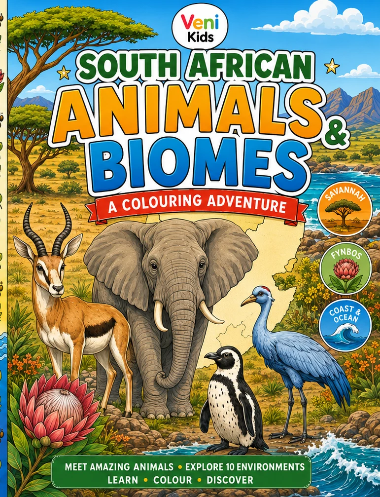
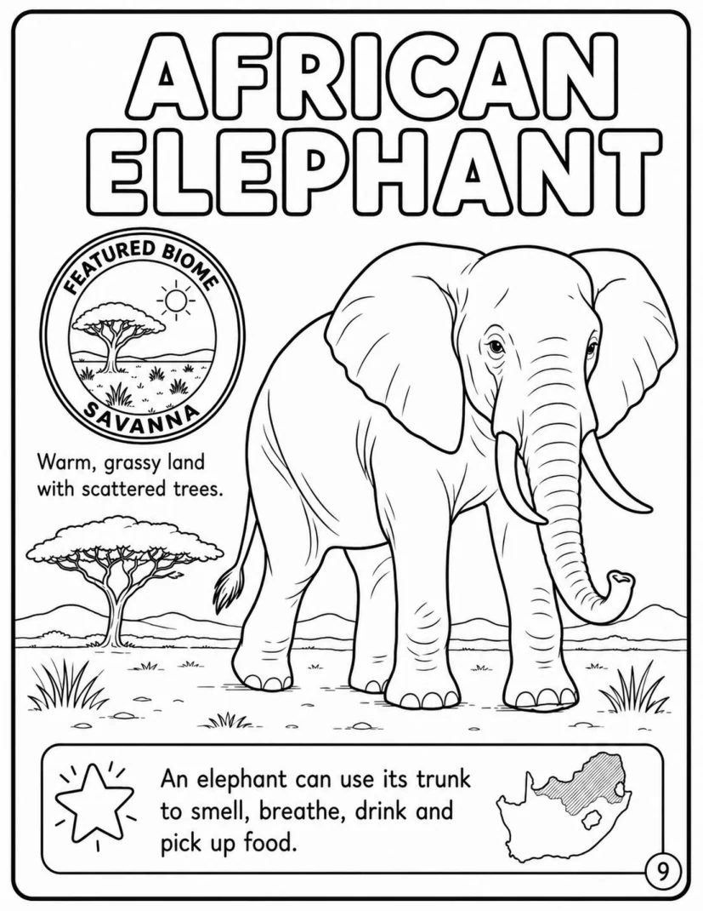
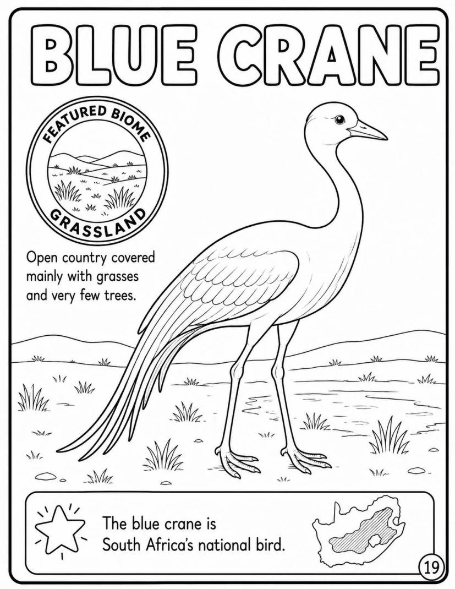
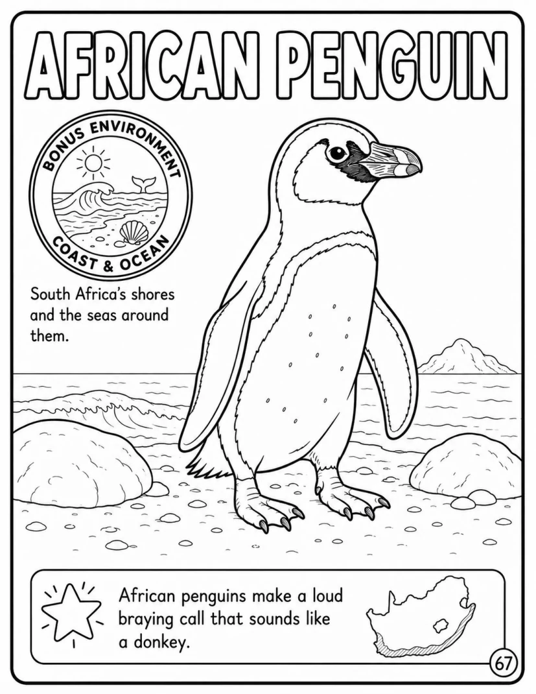
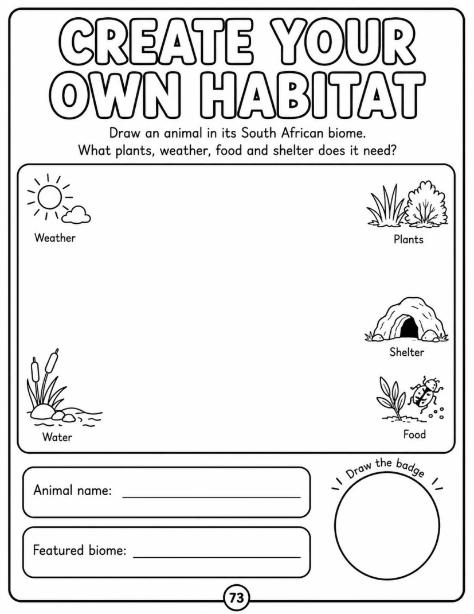
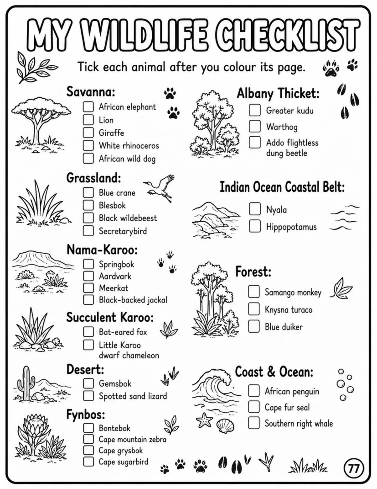

Wildlife from across the country
From elephants, lions and springbok to penguins, turacos, dung beetles and southern right whales.

A Colouring Adventure introducing children to South Africa’s wildlife and the places they call home.
Looking for book extras? Visit the Veni Kids homepage for free activities, book updates and future downloadable resources.
Each featured animal is paired with a clear colouring illustration, a child-friendly fact and visual clues connecting it to a South African environment.
From elephants, lions and springbok to penguins, turacos, dung beetles and southern right whales.
Nine land biomes plus the Coast & Ocean bonus environment.
Habitat design, badge creation, wildlife checklist and completion certificate.
Selected previews from the current interior.





The book is designed primarily for children aged approximately four to eight, with younger children enjoying the colouring and older children engaging more deeply with the facts and activities.
The book explores South Africa’s nine land biomes and one Coast & Ocean bonus environment.
Yes. A downloadable sample is planned and will be linked from the Veni Kids freebies page once ready.
Purchase links will be added after the paperback and printable editions are live.